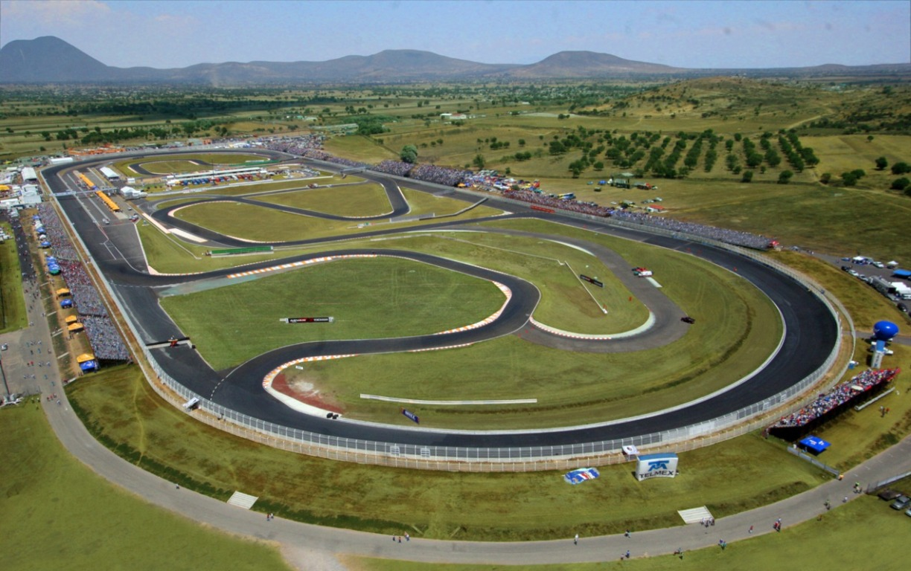
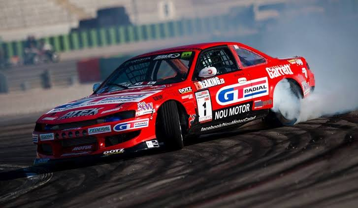
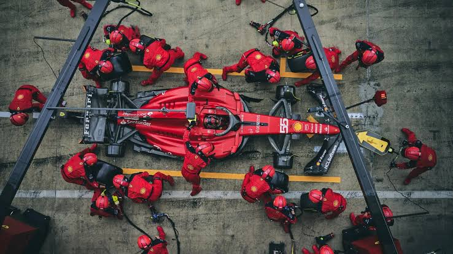
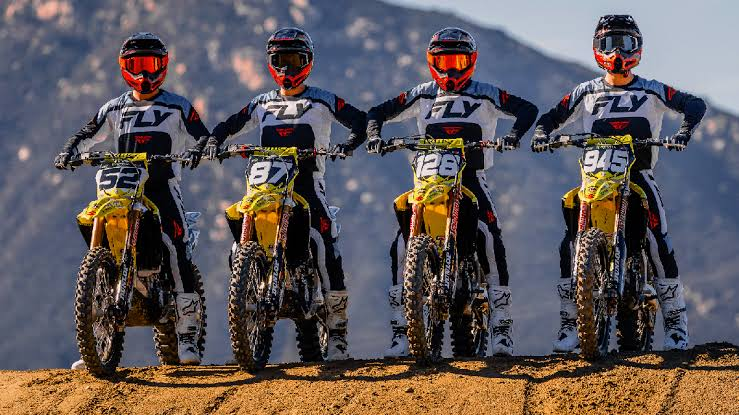

Autódromo
Trazadas, frenado, puntos de giro y gestión de neumáticos. De tu primera vuelta a una carrera de resistencia.
Ver programas
FORMANDO PILOTOS DESDE LA CUNA
Entrenamiento de alto rendimiento para quienes quieren convertir su pasión por conducir en técnica, control y espíritu de competición.
Solo en circuitos cerrados · Instructores certificados
8+años formando pilotos
6disciplinas de entrenamiento
100%práctica en pista controlada
1:1coaching enfocado en ti
ENTRENA CON PROPÓSITO
No enseñamos a conducir. Enseñamos a leer cada curva, entender cada máquina y tomar decisiones cuando cada décima cuenta.
Trazadas, frenado, puntos de giro y gestión de neumáticos. De tu primera vuelta a una carrera de resistencia.
Ver programas
Domina el sobreviraje, la transferencia de peso y el derrape progresivo en un circuito cerrado.
Ver programas
Conoce frenos, suspensión y setup. Aprende a diagnosticar y resolver reparaciones rápidas en pits.
Ver programas
Reglamento, licencia deportiva, telemetría básica y trabajo en equipo para dar el salto.
Ver programas
LA SEGURIDAD NO SE NEGOCIA
Toda práctica ocurre en circuitos cerrados con instructores certificados. Auto: casco, HANS y overol. Moto: casco integral, mono, guantes y botas homologados; cada sesión sigue su protocolo específico.
Conoce nuestro métodoTU PRIMERA VUELTA TE ESPERA
Para entrenar necesitas una licencia de conducción vigente. Nosotros ponemos la pista, el equipo y la guía para empezar.
Agenda una sesión